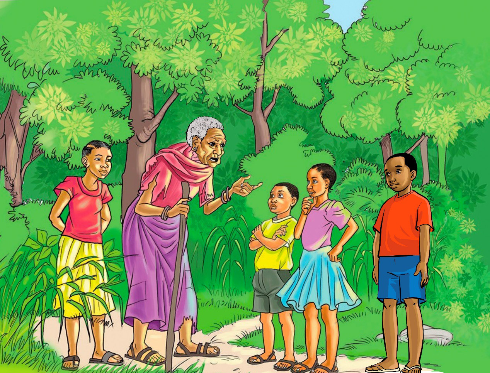

Wakaanza safari. Wakasafiri, wakasafiri, mchana na usiku. Hakika, walichoka sana lakini hawakukata tamaa. Siku moja, wakakutana na bibi kizee mmoja njiani. Walifurahi sana, wakamsalimu kwa shauku kubwa. Akawauliza, “Wajukuu zangu, mbona mko safarini?” Wakajibu kwa sauti ya unyonge, “Bibi kijiji chetu kimepatwa na ukame. Tunatafuta mahali pengine pa kuishi.” Bibi akawahurumia na kusema, “Poleni sana! Mmm! Eeee! Hebu kwanza wajukuu zangu, kuna jambo ninaliwaza. Kabla ya kuendelea na safari yenu, ngojeni niwasimulie kwanza hadithi ya “Wana saba” huenda mkapata la kujifunza,” Alisema Bibi.

Ndipo akaanza:
Bibi: Haya sasa wajukuu zangu! Paukwa!
Wajukuu: Pakawa!
Bibi: Palitokea chanja gaa!
Wajukuu: Ehee!